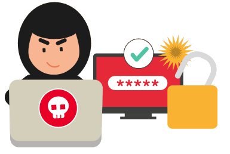

TIPOS DE CIBERATAQUES
1
Ataques
a contraseñas
Los ciberdelincuentes se sirven de diversas técnicas y herramientas con las que atacar a nuestras credenciales. Los usuarios no siempre les dificultamos esta tarea, y solemos caer en malas prácticas que ponen en peligro nuestra seguridad:
- Utilizar la misma contraseña para distintos servicios.
- Utilizar contraseñas débiles, fáciles de recordar y de atacar
- Utilizar información personal a modo de contraseñas, como la fecha de nacimiento.
- Apuntarlas en notas o archivos sin cifrar.
- Guardar las contraseñas en webs o en el navegador.
- Y, finalmente, hacer uso de patrones sencillos, como utilizar la primera letra en mayúscula, seguida de 4 o 5 en minúscula y añadir 1 o 2 números o un carácter especial. Estos patrones acaban por popularizarse, facilitando aún más la tarea a los ciberdelincuentes.
